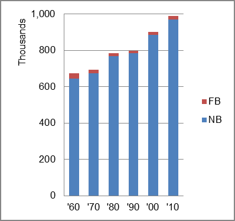

The foreign-born (FB) population decreased from 30,646 in 1960 to 20,031 in 2010. That was a decrease of 34.6 percent. The foreign-born share changed from 4.5 percent to 2.0 percent.
The share of the overall population that was native-born (NB) increased by 50.5 percent.
Montana: Population 1960-2010 
The first chart below shows the three population change factors for three periods adjusted for annual average amounts. Domestic migration (NDM) was the dominant factor in population increase, accounting more than half of population increase in all periods.
The second chart shows the same data but with an adjustment to reflect births to immigrants shifted to NIM. In it, NDM remained the main factor adding population in all periods.
Montana: Sources of Population Change 1990-2013 Montana: Sources of Population Change (Adjusted) 1990-2013
B-D NDM NIM B-D NDM NIM 90-'99 40.2% 56.6% 3.2% 90-'99 36.9% 56.6% 6.5% 00-'09 42.0% 53.9% 4.1% 00-'09 37.8% 53.9% 8.4% 10-'13 40.3% 50.4% 9.3% 10-'13 35.7% 50.4% 13.9%